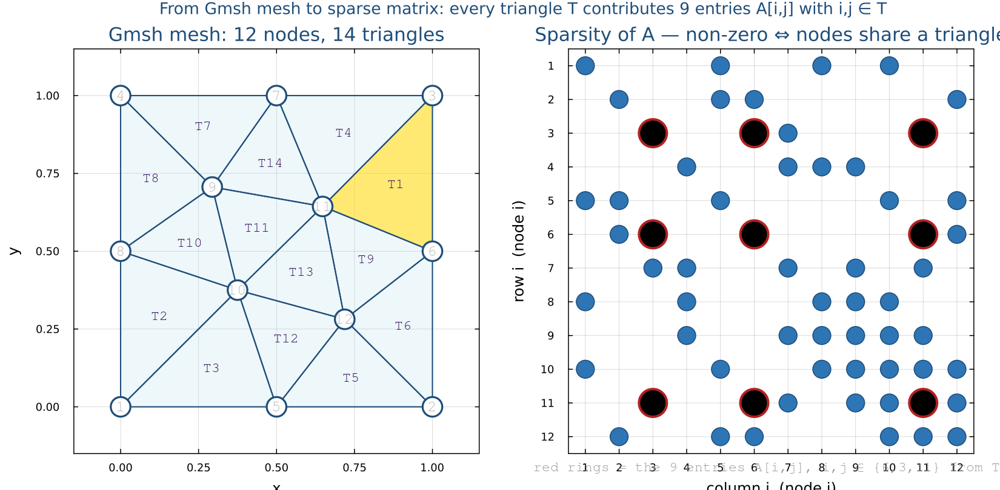

Julia for HPC
A step-by-step guide: from the equation on paper to working Julia code, then to running jobs on a compute cluster.
Overview & Prerequisites
This guide walks you through a complete Julia environment for scientific computing. The core of the guide (Step 5) shows how to read a PDE from a paper and convert each mathematical term into Julia code, one step at a time.
Time Estimate
Step 1Install WSL2
WSL2 runs a real Linux kernel inside Windows. All scientific Julia packages work best on Linux.
1.1 Enable WSL2
Open PowerShell as Administrator:
wsl --install
# Restart your computer when prompted1.2 First-time Ubuntu setup
sudo apt update && sudo apt upgrade -y
sudo apt install -y curl wget git build-essentialStep 2Install juliaup & Julia
juliaup is the official Julia version manager — like pyenv for Python.
curl -fsSL https://install.julialang.org | sh
source ~/.bashrc
juliaup add release && juliaup default release
julia --version2.1 juliaup cheatsheet
| Command | Action |
|---|---|
juliaup add release | Install the latest stable Julia |
juliaup add 1.10.4 | Install a specific version |
juliaup default 1.10.4 | Switch the default version |
juliaup list | Show installed versions |
juliaup update | Update Julia and juliaup |
2.2 Your first Julia program
println("Hello, Julia!")
x = 3.14
println(2x^2 + 1)
f(x) = exp(-x^2)
println(f(1.0))] for package mode, ? for help, ; for shell.
Backspace returns to normal mode.
Step 3Installing Julia Packages
Always work inside a project environment — it pins versions so results are reproducible.
mkdir -p ~/julia-pde && cd ~/julia-pde
julia --project=.(@julia-pde) pkg> add DifferentialEquations Plots SparseArrays| Package mode | What it does |
|---|---|
add Plots | Install Plots.jl |
rm Plots | Remove a package |
update | Update all packages |
status | List installed packages |
instantiate | Restore from Manifest.toml |
Step 4Key Julia Packages for Scientific Computing
| Package | Use case |
|---|---|
LinearAlgebra (stdlib) | Dense matrix ops, eigensystems |
SparseArrays (stdlib) | Sparse PDE matrices |
FFTW.jl | Spectral methods (FFT) |
DifferentialEquations.jl | ODE/PDE solver suite |
Gmsh.jl | Unstructured mesh generation (used in §5.5) |
Ferrite.jl / Gridap.jl | Finite element methods |
Oceananigans.jl | Production CFD on HPC |
Plots.jl / Makie.jl | Visualization |
MPI.jl / CUDA.jl | HPC parallelism |
Functions
Julia functions are first-class values. They support multiple dispatch, optional / keyword arguments, and can be written in several styles.
Defining functions
# Full block form
function greet(name)
println("Hello, ", name)
end
# One-liner (most common for math)
square(x) = x^2
cube(x) = x^3
# Call them
greet("Julia") # Hello, Julia
square(5) # 25
cube(3) # 27Anonymous functions
Useful when passing a function as an argument (e.g. to map, filter).
f = x -> x^2 + 1 # single argument
g = (x, y) -> x^2 + y^2 # two arguments
f(3) # 10
g(3, 4) # 25
# Inline in map
map(x -> x^2, [1, 2, 3, 4]) # [1, 4, 9, 16]Default and keyword arguments
# Default argument
function power(x, n=2)
return x^n
end
power(3) # 9 (n defaults to 2)
power(3, 3) # 27
# Keyword arguments (after the semicolon)
function make_point(; x=0.0, y=0.0)
return (x, y)
end
make_point(y=5.0) # (0.0, 5.0)Multiple dispatch
Julia picks the right method based on the types of all arguments — no class needed.
describe(x::Int) = println("integer: ", x)
describe(x::Float64) = println("float: ", x)
describe(x::String) = println("string: ", x)
describe(42) # integer: 42
describe(3.14) # float: 3.14
describe("hi") # string: hiFunctions that modify their input — the ! convention
# sort returns a new sorted array (does not change original)
# sort! sorts the array in-place (modifies the argument)
v = [3, 1, 4, 1, 5, 9]
sorted = sort(v) # new array; v is unchanged
sort!(v) # v is now [1, 1, 3, 4, 5, 9]
# Same pattern: push! append! fill! normalize! etc.! signals the function modifies at least one of its arguments.
When in doubt, prefer the non-! form and assign the result.
Vectors & Matrices
Julia uses 1-based indexing and stores matrices in column-major order (like Fortran/MATLAB, unlike C/Python).
Creating vectors
v = [1.0, 2.0, 3.0, 4.0] # column vector, Float64
w = [1, 2, 3, 4] # Int64 by default
zeros(5) # [0.0, 0.0, 0.0, 0.0, 0.0]
ones(4) # [1.0, 1.0, 1.0, 1.0]
rand(6) # 6 random numbers in [0,1)
# Range-based
r = 0.0:0.25:1.0 # lazy range: 0, 0.25, 0.5, 0.75, 1.0
x = collect(r) # convert to a plain Vector
x = range(0, 1, length=101) # 101 equally-spaced pointsCreating matrices
A = [1 2 3; # rows separated by ;
4 5 6;
7 8 9]
zeros(3, 4) # 3×4 matrix of zeros
ones(2, 5) # 2×5 matrix of ones
rand(4, 4) # 4×4 random matrix
Matrix{Float64}(I, 3, 3) # 3×3 identity (needs LinearAlgebra)Indexing and slicing
A = [10 20 30;
40 50 60;
70 80 90]
A[2, 3] # 60 — row 2, column 3
A[1, :] # [10, 20, 30] — entire first row
A[:, 2] # [20, 50, 80] — entire second column
A[1:2, 1:2] # 2×2 top-left submatrix
v = [10, 20, 30, 40, 50]
v[end] # 50 — last element
v[end-1] # 40
v[2:4] # [20, 30, 40]Array comprehensions
The most readable way to build arrays from a formula.
xs = [i^2 for i in 1:5] # [1, 4, 9, 16, 25]
ys = [sin(π*x) for x in 0:0.1:1] # sin at 11 points
# 2-D comprehension → matrix
A = [i + j for i in 1:3, j in 1:4] # 3×4 matrixBroadcasting with .
Apply any scalar function element-wise to an array — no loop needed.
v = [0.0, π/6, π/4, π/3, π/2]
sin.(v) # element-wise sin
v .^ 2 # element-wise square
v .* 2 # element-wise multiply by scalar
exp.(v) .- 1 # chain: (eˣ - 1) for every element
# Works on matrices too
A = rand(3, 3)
log.(A) # element-wise log
A .> 0.5 # element-wise booleanf.(x) applies f to every element.
Chain multiple dots in one expression — Julia fuses them into a single pass.
Growing and combining arrays
v = Float64[] # empty vector
push!(v, 1.0) # append one element
push!(v, 2.0, 3.0) # append multiple
append!(v, [4.0, 5.0])
# Concatenate existing arrays
a = [1, 2, 3]
b = [4, 5, 6]
vcat(a, b) # [1,2,3,4,5,6] (vertical / row-wise)
hcat(a, b) # 3×2 matrix (horizontal / column-wise)
[a; b] # same as vcat
[a b] # same as hcat (row vectors)Linear Algebra
Load LinearAlgebra (standard library — no install needed) for the full feature set.
using LinearAlgebraBasic matrix operations
A = [4.0 3.0; 6.0 3.0]
b = [10.0, 12.0]
v = [1.0, 2.0, 3.0]
w = [4.0, 5.0, 6.0]
A * b # matrix–vector product
A * A # matrix–matrix product
A' # transpose (adjoint for real matrices)
A' * A # A^T A
dot(v, w) # dot product = 1*4 + 2*5 + 3*6 = 32
cross(v, w) # cross product (3-D only)
norm(v) # Euclidean norm √(1+4+9)
norm(v, 1) # 1-norm (sum of abs values)
norm(v, Inf) # ∞-norm (max abs value)Solving linear systems — $Ax = b$
A = [2.0 1.0; 5.0 7.0]
b = [11.0, 13.0]
x = A \ b # solve Ax = b → x = [-3.0, 17.0] (approx)
# uses LU factorization automatically
# Verify the solution
norm(A * x - b) # should be ≈ 0A \ b is faster and more numerically stable than inv(A) * b.
Never compute the inverse explicitly unless you need it for analysis.
Factorizations
A = [4.0 2.0; 2.0 3.0] # symmetric positive-definite
F = lu(A) # LU factorization (general square)
F = cholesky(A) # Cholesky (symmetric positive-definite)
F = qr(A) # QR (least-squares, rectangular)
F = svd(A) # SVD
# Once factorized, solve multiple right-hand sides cheaply
x1 = F \ b1
x2 = F \ b2Eigenvalues and eigenvectors
A = [2.0 1.0; 1.0 3.0]
vals = eigvals(A) # eigenvalues only
vals, vecs = eigen(A) # both: vals[i], vecs[:,i]
λ_max = maximum(vals) # spectral radius
cond(A) # condition numberSparse matrices
PDE discretizations produce huge, sparse systems. Use SparseArrays to avoid storing the millions of zeros.
using SparseArrays
# Build from (row, col, value) triplets
rows = [1, 2, 3, 1]
cols = [1, 2, 3, 3]
vals = [4.0, 5.0, 6.0, 7.0]
S = sparse(rows, cols, vals, 3, 3)
# Or convert a dense matrix
A_dense = [1.0 0.0; 0.0 2.0]
A_sparse = sparse(A_dense)
# Tridiagonal shortcut
n = 5
T = spdiagm(-1 => -ones(n-1),
0 => 2*ones(n),
1 => -ones(n-1))
# Sparse solve uses the same \ syntax
x = T \ b| Operation | Julia | Notes |
|---|---|---|
| Matrix–vector product | A * x | Dense or sparse |
| Transpose | A' | Conjugate transpose; use transpose(A) for non-conjugate |
| Solve $Ax = b$ | A \ b | Auto-selects best algorithm |
| Dot product | dot(u, v) or u ⋅ v | \cdot + Tab |
| Norm | norm(v) | Euclidean; add p for p-norm |
| Determinant | det(A) | Dense only; avoid for large matrices |
| Eigenvalues | eigvals(A) | Use eigen for vectors too |
| Condition number | cond(A) | Estimates ill-conditioning |
| Rank | rank(A) | Via SVD threshold |
| Trace | tr(A) | Sum of diagonal elements |
Useful Built-in Functions
These are in Julia's base — no using needed.
Array inspection
A = rand(3, 4)
size(A) # (3, 4)
size(A, 1) # 3 (number of rows)
size(A, 2) # 4 (number of columns)
length(A) # 12 (total elements)
ndims(A) # 2
eltype(A) # Float64Reductions
v = [3.0, 1.0, 4.0, 1.0, 5.0, 9.0]
sum(v) # 23.0
prod(v) # 540.0
minimum(v) # 1.0
maximum(v) # 9.0
argmin(v) # 2 (index of minimum)
argmax(v) # 6 (index of maximum)
mean(v) # 3.833... (needs Statistics: using Statistics)
cumsum(v) # running total
# Along a dimension of a matrix
A = [1 2; 3 4]
sum(A, dims=1) # sum each column → [4 6]
sum(A, dims=2) # sum each row → [3; 7]Reshaping and iteration
v = 1:12
reshape(v, 3, 4) # 3×4 matrix (column-major fill)
reshape(v, 2, 2, 3) # 3-D array
# Iterating
for (i, val) in enumerate(v)
println(i, " => ", val)
end
# map / filter
squares = map(x -> x^2, 1:5) # [1, 4, 9, 16, 25]
evens = filter(x -> x % 2 == 0, 1:10) # [2, 4, 6, 8, 10]Math constants and common functions
π # 3.14159... (type \pi + Tab)
ℯ # 2.71828... (type \euler + Tab)
Inf # infinity
NaN # not a number
abs(-3.0) # 3.0
sqrt(9.0) # 3.0
cbrt(8.0) # 2.0
floor(2.9) # 2.0
ceil(2.1) # 3.0
round(2.5) # 2.0 (banker's rounding)
clamp(x, lo, hi) # keep x within [lo, hi]
isnan(NaN) # true
isinf(Inf) # true
isfinite(1.0) # true| Task | Julia |
|---|---|
| Print with newline | println("value = ", x) |
| Print without newline | print("x = ", x) |
| String interpolation | "x is $(x), x² is $(x^2)" |
| Type of value | typeof(x) |
| Convert type | Float64(3), Int(2.0) |
| Check type | x isa Float64 |
| Ternary expression | x > 0 ? "pos" : "non-pos" |
| Short-circuit and/or | && / || |
| Element-wise compare | v .== 3, v .> 0 |
| Find indices where true | findall(v .> 0) |
\alpha then Tab to get
α, \Delta for Δ, \^2 for superscript ².
This lets your code look exactly like the math on the page.
Create Your First Julia Package
A single-file script is fine for experiments, but once your code grows you want a package: a named module with proper dependency tracking, a test suite, and live reload support via Revise.jl. Setting this up takes two minutes and makes every workflow in Step 5 onward much smoother.
Package structure
Generate the skeleton with one command. Julia creates all the boilerplate for you:
using Pkg
Pkg.generate("MyPDE") # creates the folder MyPDE/The generated layout:
MyPDE/
├── Project.toml # package name, UUID, dependencies
└── src/
└── MyPDE.jl # the module — this is your entry pointAdd a test/ folder yourself (Julia will use it automatically):
mkdir MyPDE/test
touch MyPDE/test/runtests.jlThe module file — src/MyPDE.jl
Everything inside module … end is private by default.
Use export to make names visible to anyone who does
using MyPDE. Split large code into sub-files with
include():
module MyPDE
# Export the names users can call with `using MyPDE`
export solve_heat_1d, solve_wave_1d, solve_poisson_2d
# Split code into separate files — each file sees the module's scope
include("heat.jl") # defines solve_heat_1d
include("wave.jl") # defines solve_wave_1d
include("poisson.jl") # defines solve_poisson_2d
endA minimal function in src/heat.jl
function solve_heat_1d(; N=200, α=0.01, L=1.0, T=1.0)
dx = L / (N + 1)
dt = 0.4 * dx^2 / α
x = range(dx, L - dx, length=N)
u = @. exp(-100 * (x - 0.5)^2)
for _ in 1:ceil(Int, T / dt)
u[2:end-1] .+= (α * dt / dx^2) .*
(u[3:end] .- 2 .* u[2:end-1] .+ u[1:end-2])
end
return collect(x), u
endLoad the package in development mode
Pkg.develop links the package into your environment by path —
no need to install it. Changes you make to the source files take effect
immediately (with Revise, see below).
# From the directory that CONTAINS the MyPDE/ folder:
using Pkg
Pkg.develop(path="./MyPDE")
# Now you can import it like any installed package:
using MyPDE
x, u = solve_heat_1d() # calls your functionWrite and run tests
using MyPDE, Test
@testset "Heat equation" begin
x, u = solve_heat_1d(N=50, T=0.1)
@test length(x) == 50 # correct grid size
@test maximum(u) < 1.0 # solution decays over time
@test u[1] ≈ 0.0 atol=1e-10 # Dirichlet BC holds at left
@test u[end] ≈ 0.0 atol=1e-10 # Dirichlet BC holds at right
end(@MyPDE) pkg> test # runs test/runtests.jl and shows pass/failRevise.jl — live code reload
Normally, changing a source file requires restarting Julia and re-running all your setup code. Revise.jl watches your package files and automatically patches the running session whenever you save — keeping your REPL state intact.
Install Revise
# Install into your global environment (available in all projects)
(@v1.10) pkg> add ReviseMake Revise load automatically on every Julia start
Create (or edit) ~/.julia/config/startup.jl — Julia runs this
file every time it starts:
try
using Revise
catch e
@warn "Could not load Revise" exception = e
endmkdir -p ~/.julia/config
# Then open ~/.julia/config/startup.jl in your editor and paste the code aboveHow Revise works with your package
Load Revise before your package. After that, any edit you save to a
source file inside src/ is live in the REPL instantly:
using Revise # must come first
using MyPDE
x, u = solve_heat_1d() # works normally
# --- now open src/heat.jl and change α default from 0.01 to 0.05, save ---
x, u = solve_heat_1d() # Revise picked up the change — no restart needed
# The new default α = 0.05 is already activeusing
statements at the top level require a restart. Revise handles function
bodies and module-level code — which covers 95% of day-to-day edits.
The development workflow loop
Once your package is set up and Revise is running, your day-to-day workflow is a tight loop:
Open a terminal in your project directory and start Julia.
Revise loads from startup.jl automatically.
You only do this once per working session.
cd ~/julia-pde julia --project=. # Revise auto-loaded from startup.jl # then: using MyPDE
Open src/heat.jl in VS Code (or any editor),
change a function, and press Save.
Revise watches all files in src/ and
patches the running Julia session automatically.
function solve_heat_1d(; N=200, α=0.05, ...)
# ↑ changed from 0.01
...
Revise re-defines the function in the running session. All your previously defined variables (grids, results, plots) are still there — nothing is lost.
julia> x, u = solve_heat_1d() # Uses the new α = 0.05 immediately julia> plot(x, u) # still works — no re-import needed
Switch to pkg mode and run test. Julia runs
test/runtests.jl and prints a pass/fail summary.
Run this before committing to git to catch regressions early.
(@MyPDE) pkg> test Test Summary: | Pass Fail Total Heat equation | 4 0 4 All tests passed.
MyPDE) and add each solver from Step 5
as a separate src/ file. Export the solver functions.
This way you can call solve_heat_1d() from the REPL,
from tests, and from Slurm job scripts — all with the same import.
Step 5The PDE Solving Workflow
Every PDE problem follows five stages. The most important skill is reading an equation from a paper and converting each mathematical term into code, one operation at a time. That is exactly what the worked examples below do.
5.1 Classify the PDE before writing a single line
The type of PDE determines which time scheme and which solver are valid.
| Type | Prototype | Key property | Example below |
|---|---|---|---|
| Parabolic | $\partial u/\partial t = \alpha\nabla^2 u$ | Smooth over time, stable explicit schemes | Heat equation |
| Hyperbolic | $\partial^2 u/\partial t^2 = c^2\nabla^2 u$ | Propagates features, tight CFL | Wave equation |
| Elliptic | $-\nabla^2 u = f$ | Steady state — no time, solve $Au=b$ | Poisson equation |
| Nonlinear / Coupled | NS momentum + $\nabla\cdot\mathbf{u}=0$ | Needs projection or implicit treatment | Navier-Stokes |
5.2 Two rules that appear in every PDE solver
A computer cannot work with continuous functions. Discretization replaces smooth derivatives with arithmetic on a finite array of numbers. You only need two formulas — and once you recognise them, every solver in this guide will look familiar.
Rule 1 — Central difference: how to approximate a second derivative
Suppose you have measured a quantity $u$ at $N$ equally-spaced grid points with spacing $h = \Delta x$. The second derivative at point $i$ is approximated using only its two immediate neighbours:
$$\frac{d^2 u}{d x^2}\bigg|_{x_i} \approx \frac{u_{i+1} - 2\,u_i + u_{i-1}}{h^2}$$The three weights $[+1,\; -2,\; +1]$ form what is called the stencil:
| Stencil role | Notation | Julia index (interior loop) | Weight |
|---|---|---|---|
| Left neighbour | $u_{i-1}$ | u[i-1] → vectorised: u[1:end-2] | +1 |
| Centre point | $u_i$ | u[i] → vectorised: u[2:end-1] | −2 |
| Right neighbour | $u_{i+1}$ | u[i+1] → vectorised: u[3:end] | +1 |
Here is a complete, runnable example — no external setup needed:
# 5 grid points on [0, 1], spacing h = 0.25
h = 0.25
u = [0.0, 1.0, 1.5, 1.0, 0.0] # some values at those points
# u[1] u[2] u[3] u[4] u[5]
# Second derivative at the single interior point i = 3:
i = 3
d2u_at_i = (u[i+1] - 2*u[i] + u[i-1]) / h^2
println("d²u/dx² at i=3: ", d2u_at_i) # -16.0
# Apply the stencil to ALL interior points at once (Julia broadcast):
d2u_all = (u[3:end] .- 2 .* u[2:end-1] .+ u[1:end-2]) ./ h^2
println("d²u/dx² at all interior points: ", d2u_all) # [-16.0, -16.0, -16.0]Rule 2 — Forward Euler: how to step forward in time
Once you have a way to compute derivatives in space (Rule 1), you need a way to march the solution forward in time. The simplest method is forward Euler: if you know the current state $u^n$ and its rate of change (the right-hand side of the PDE), you predict the next state $u^{n+1}$:
$$u_i^{n+1} = u_i^n + \Delta t \cdot \underbrace{f(u^n, x_i)}_{\text{right-hand side}}$$Continuing the same example — now adding a time dimension:
h = 0.25
dt = 0.01 # timestep Δt (must be chosen carefully — see CFL below)
u = [0.0, 1.0, 1.5, 1.0, 0.0] # u^n at t = 0
# Imagine the PDE says: du/dt = d²u/dx² (heat equation with α=1)
# Right-hand side = d²u/dx² computed with Rule 1:
rhs = (u[3:end] .- 2 .* u[2:end-1] .+ u[1:end-2]) ./ h^2
# Forward Euler: u^{n+1} = u^n + Δt × rhs
# Only update interior points — boundary values stay fixed
u[2:end-1] .+= dt .* rhs
println("u after one step: ", u)
# u[1] and u[5] unchanged (boundary conditions)
# u[2], u[3], u[4] updated by the PDEInf or NaN
within a few steps.
These two rules — Rule 1 (stencil) and Rule 2 (Euler step) — are the
building blocks for every solver in the next section. When you see
(u[3:end] .- 2.*u[2:end-1] .+ u[1:end-2]) ./ dx^2
anywhere below, that is always Rule 1. When you see
u[2:end-1] .+= dt .* (...), that is always Rule 2.
Example A — Heat Equation (Parabolic)
The heat equation models how temperature diffuses through a material over time. This is the simplest PDE and uses both Rule 1 and Rule 2 directly.
Domain: $x \in [0, L]$, $t \in [0, T]$
BCs: $u(0,t) = u(L,t) = 0$
IC: $u(x,0) = e^{-100(x-0.5)^2}$ (Gaussian pulse)
Parameter: $\alpha$ = thermal diffusivity
N = 200 L = 1.0 dx = L / (N + 1) # Δx x = range(dx, L-dx, N) # x₁ … xₙ (interior only) # Initial condition u(x, 0) u = @. exp(-100*(x - 0.5)^2)
Rearranging to solve for the unknown $u_i^{n+1}$:
$u_i^{n+1} = u_i^n + \Delta t \cdot (\text{right side})$
# u currently holds u^n (the known state)
# After the line below, u becomes u^{n+1}
u[2:end-1] .+= dt .* (right_side)
# ↑ .+= is shorthand for u = u + dt*rhs
# ↑ 2:end-1 skips endpoints → BCs stay 0
Identical to Rule 1 from Section 5.2 — just scaled by $\alpha / \Delta x^2$.
# This is Rule 1 scaled by α/dx²:
right_side = (α / dx^2) .*
(u[3:end] .- 2 .* u[2:end-1] .+ u[1:end-2])
# u_{i+1} u_i u_{i-1}
$r$ is the diffusion number. Stable only when $r \leq \tfrac{1}{2}$.
# This single line IS the heat equation for one timestep: u[2:end-1] .+= (α * dt / dx^2) .* (u[3:end] .- 2 .* u[2:end-1] .+ u[1:end-2])
Use safety factor 0.4 (not 0.5) to stay well inside the stable region. Once you know $\Delta x$ and $\alpha$, this formula gives you $\Delta t$.
α = 0.01 dx = L / (N + 1) # dt = 0.4 × dx² / α → r = α·dt/dx² = 0.4 < 0.5 ✓ dt = 0.4 * dx^2 / α nsteps = ceil(Int, T / dt) # total number of timesteps
function solve_heat_1d(; N=200, α=0.01, L=1.0, T=1.0)
# Step 1 — grid
dx = L / (N + 1)
x = range(dx, L - dx, length=N)
# Step 5 — stable Δt: r = α·dt/dx² ≤ 0.5
dt = 0.4 * dx^2 / α
nsteps = ceil(Int, T / dt)
# Step 1 — initial condition u(x,0)
u = @. exp(-100 * (x - 0.5)^2)
for _ in 1:nsteps
# Steps 3+4 — Rule 1 (stencil) inside Rule 2 (Euler step):
# u_i^{n+1} = u_i^n + r·(u_{i+1} - 2u_i + u_{i-1})
u[2:end-1] .+= (α * dt / dx^2) .*
(u[3:end] .- 2 .* u[2:end-1] .+ u[1:end-2])
# Dirichlet BCs: u[1] = u[end] = 0 — never updated
end
return collect(x), u
end
using Plots
x, u = solve_heat_1d()
plot(x, u, xlabel="x", ylabel="u(x,T)", title="Heat equation T=1.0", lw=2)Example B — Wave Equation (Hyperbolic)
The wave equation has a second time derivative. Rule 1 (stencil) is applied identically — only the time discretization changes, and now we need to track three time levels instead of two.
BCs: $u(0,t) = u(L,t) = 0$ (fixed ends — like a guitar string)
ICs: $u(x,0) = u_0(x)$, $\;\dot{u}(x,0) = 0$ (plucked, then released)
Parameter: $c$ = wave speed
# Because the PDE has ∂²u/∂t², we need:
# u_prev = u^{n-1} (one step ago)
# u_curr = u^n (current)
# u_next = u^{n+1} (what we compute)
u_prev = initial_condition.(x)
u_curr = copy(u_prev) # explained in step 5
right_side = (c^2 / dx^2) .*
(u_curr[3:end] .- 2 .* u_curr[2:end-1]
.+ u_curr[1:end-2])
# Same stencil as Example A — only α replaced by c²
Compare to Rule 1: the same $[+1,\,-2,\,+1]$ pattern — but across time instead of space. Solve for $u_i^{n+1}$: $\;u_i^{n+1} = 2u_i^n - u_i^{n-1} + \Delta t^2 \cdot(\ldots)$
# u^{n+1} = 2u^n - u^{n-1} + Δt² × right_side
u_next[2:end-1] .=
2 .* u_curr[2:end-1] .- u_prev[2:end-1] .+
dt^2 .* right_side
Notice: the space stencil $[+1,-2,+1]$ is identical to the heat equation — only the time part differs.
λ = (c * dt / dx)^2 # CFL number squared
u_next[2:end-1] .=
2 .* u_curr[2:end-1] .- u_prev[2:end-1] .+
λ .* (u_curr[3:end] .- 2 .* u_curr[2:end-1]
.+ u_curr[1:end-2])
CFL stability: $\lambda = c\,\Delta t / \Delta x \leq 1$ $\;\Longrightarrow\;$ $\Delta t \leq \Delta x / c$
# Zero velocity IC: u_prev = u_curr at t=0 # (the update formula gives the right result) u_prev = copy(u_curr) # CFL: λ = c·dt/dx ≤ 1 dt = 0.4 * dx / c # λ = 0.4 < 1 ✓
function solve_wave_1d(; N=300, c=1.0, L=1.0, T=1.5)
# Step 1 — grid
dx = L / (N + 1)
x = range(dx, L - dx, length=N)
# Step 5 — CFL: λ = c·dt/dx ≤ 1
dt = 0.4 * dx / c
λ = (c * dt / dx)^2 # λ² used in update rule
# Step 1 — initial condition: triangular pluck
u_curr = [xi < 0.5 ? 2xi : 2(1 - xi) for xi in x]
# Step 5 — zero initial velocity → u_prev = u_curr
u_prev = copy(u_curr)
u_next = similar(u_curr)
for _ in 1:ceil(Int, T / dt)
# Steps 2+3+4 — leap-frog:
# u^{n+1} = 2u^n - u^{n-1} + λ²·(stencil)
u_next[2:end-1] .=
2 .* u_curr[2:end-1] .- u_prev[2:end-1] .+
λ .* (u_curr[3:end] .- 2 .* u_curr[2:end-1]
.+ u_curr[1:end-2])
# Dirichlet BCs: endpoints stay 0
u_prev, u_curr = u_curr, copy(u_next)
end
return collect(x), u_curr
end
using Plots
x, u = solve_wave_1d()
plot(x, u, xlabel="x", ylabel="u(x,T)", title="Wave equation T=1.5", lw=2)Example C — Poisson Equation (Elliptic)
Poisson is a steady-state problem — no time derivative, no time loop. Instead, Rule 1 is applied at every grid point simultaneously to produce a large linear system $A\mathbf{u} = \mathbf{b}$, solved in one shot.
BC: $u = 0$ on all four walls
Test case (known exact answer):
$f(x,y) = 2\pi^2\sin(\pi x)\sin(\pi y)$
$u_{\text{exact}}(x,y) = \sin(\pi x)\sin(\pi y)$
N = 50
h = 1.0 / (N + 1)
xs = range(h, 1-h, length=N)
ys = range(h, 1-h, length=N)
# Source term matrix F[j,i] = f(xs[i], ys[j])
F = [2π^2*sin(π*x)*sin(π*y)
for y in ys, x in xs]
There are $N^2$ such equations (one per interior point). Each involves up to 5 unknowns.
# N² unknowns, N² equations # → one large sparse linear system A·u = b # # A is sparse: each row has ≤ 5 nonzeros # diagonal: 4/h² (the -2u_i term ×2) # off-diagonals: -1/h² (the +1 neighbour terms) # # Solve once: u = A \ b
$\otimes$ is the Kronecker product — it "tiles" the 1D stencil across all rows and columns of the 2D grid.
using SparseArrays, LinearAlgebra e = ones(N) T1D = spdiagm( 0 => -2 .* e, 1 => e[1:end-1], # super-diagonal -1 => e[1:end-1]) # sub-diagonal T1D ./= h^2 I_N = sparse(I, N, N) A = -(kron(I_N, T1D) + kron(T1D, I_N))
Julia's \ detects that $A$ is sparse and uses
SuiteSparse's UMFPACK solver.
One call — no iteration needed.
# b = F flattened to a column vector b = vec(F) # Solve A·u = b → u = A\b u_vec = A \ b # Reshape the solution back to N×N u = reshape(u_vec, N, N)
using SparseArrays, LinearAlgebra
function solve_poisson_2d(; N=50, L=1.0)
# Step 1 — grid
h = L / (N + 1)
xs = range(h, L - h, length=N)
ys = range(h, L - h, length=N)
# Step 3 — build sparse 2D Laplacian (Rule 1 in matrix form)
e = ones(N)
T1D = spdiagm(0 => -2 .* e,
1 => e[1:end-1],
-1 => e[1:end-1]) ./ h^2
I_N = sparse(I, N, N)
A = -(kron(I_N, T1D) + kron(T1D, I_N)) # A = −∇²
# Step 4 — source term and solve
F = [2π^2 * sin(π*x) * sin(π*y) for y in ys, x in xs]
u = reshape(A \ vec(F), N, N)
# Verification — compare to known exact solution
u_exact = [sin(π*x) * sin(π*y) for y in ys, x in xs]
println("L∞ error = ", maximum(abs.(u .- u_exact)),
" (should be O(h²) ≈ ", h^2, ")")
return collect(xs), collect(ys), u
end
using Plots
xs, ys, u = solve_poisson_2d()
heatmap(xs, ys, u, c=:viridis, aspect_ratio=:equal,
xlabel="x", ylabel="y", title="Poisson solution u(x,y)")Example D — Navier-Stokes (Nonlinear, Coupled)
Navier-Stokes combines everything from Examples A–C: an Euler time step (Example A), a diffusion term (Example A), and a pressure Poisson sub-solve (Example C) — all coupled together and repeated every timestep.
$\mathbf{u}=(u,v)$ velocity, $p$ pressure, $\nu$ kinematic viscosity
Reynolds number: $\mathrm{Re} = UL/\nu$
# ∂u/∂t + diffusion → Euler step (Example A pattern) # (u·∇)u → computed each step (new, nonlinear) # −∇p/ρ → requires solving for p first # ∇·u = 0 → means: solve a Poisson eq. for p # (same as Example C, every timestep)
$\nu\nabla^2\mathbf{u}$ → Rule 1 stencil × ν (Example A) ✓
$(\mathbf{u}\cdot\nabla)\mathbf{u}$ → new — nonlinear, must recompute every step
$-\nabla p/\rho$ → new — pressure is unknown until we solve for it
$\nabla\cdot\mathbf{u}=0$ → new — forces a Poisson solve (Example C) every step
# convection: -(u·∇)u # = -(u·∂u/∂x + v·∂u/∂y) for x-component # Must re-evaluate at every step because u changes # Example C's Poisson solve now runs every step: # ∇²p = (ρ/dt) ∇·u* # This is the expensive part of NS
This is an Euler step — identical to Example A — but the right-hand side includes the convection term. $\mathbf{u}^*$ is not divergence-free yet.
# Rule 1 stencil for diffusion (same as Example A): diff_x = ν .* laplacian(u, h) # ν∇²u diff_y = ν .* laplacian(v, h) # Convection (new — nonlinear product): conv_x = -(u .* dudx .+ v .* dudy) conv_y = -(u .* dvdx .+ v .* dvdy) # Rule 2 Euler step (same as Example A): u_star = u .+ dt .* (conv_x .+ diff_x) v_star = v .+ dt .* (conv_y .+ diff_y)
This is the Poisson equation from Example C — with the right-hand side replaced by the divergence of $\mathbf{u}^*$. It must be solved every single timestep, which is why NS is expensive.
# Divergence of u*: ∇·u* div_ustar = dudx_star .+ dvdy_star # Right-hand side (same structure as Example C) b = (ρ / dt) .* div_ustar # Solve ∇²p = b → same A matrix as Example C p = reshape(A_pressure \ vec(b), N, N)
Subtracting $\nabla p$ removes the divergent part of $\mathbf{u}^*$, leaving a velocity field that satisfies $\nabla\cdot\mathbf{u}=0$.
# Pressure gradient (Rule 1 in x and y): dpdx = (p[3:end,:] .- p[1:end-2,:]) ./ (2h) dpdy = (p[:,3:end] .- p[:,1:end-2]) ./ (2h) # Correction: u = u_star .- (dt/ρ) .* dpdx v = v_star .- (dt/ρ) .* dpdy # Now ∇·u ≈ 0 ✓
using Pkg; Pkg.add("Oceananigans")
using Oceananigans
# Lid-driven cavity at Re = 100
# Oceananigans handles stages 1–3 internally on every timestep
grid = RectilinearGrid(size=(64, 64), x=(0,1), y=(0,1),
topology=(Bounded, Bounded, Flat))
model = NonhydrostaticModel(;
grid,
advection = UpwindBiasedFifthOrder(),
timestepper = :RungeKutta3,
closure = ScalarDiffusivity(ν=1e-2)) # ν = 1/Re = 0.01
set!(model, u=0, v=0)
simulation = Simulation(model, Δt=1e-3, stop_time=10)
run!(simulation)5.4 Verify — Convergence Study
After writing a solver, confirm that refining the grid reduces the error at the expected rate. For central differences: halving $h$ should divide the error by $\approx 4$ (second-order accuracy).
$$\|u_h - u_{\text{exact}}\|_\infty = C\,h^p, \quad p = 2 \text{ for central differences}$$using Plots
Ns = [10, 20, 40, 80, 160]
hs = Float64[]
err = Float64[]
for N in Ns
xs, ys, u_num = solve_poisson_2d(N=N)
h = 1.0 / (N + 1)
u_exact = [sin(π*x)*sin(π*y) for y in ys, x in xs]
push!(hs, h)
push!(err, maximum(abs.(u_num .- u_exact)))
ratio = length(err) > 1 ? err[end-1]/err[end] : NaN
println("N=$N h=$h error=$(err[end]) ratio=$(round(ratio, digits=2))")
end
# ratio ≈ 4.0 each row confirms 2nd-order convergence
plot(hs, err, xscale=:log10, yscale=:log10, marker=:o, lw=2,
xlabel="h", ylabel="L∞ error", title="Convergence study", label="Numerical")
plot!(hs, err[1].*(hs./hs[1]).^2, ls=:dash, label="O(h²) reference")5.5 Beyond Structured Grids — Mesh → Matrix with Gmsh
Finite-difference grids work for rectangles. Real geometry — L-shapes,
airfoils, brain MRI, machine parts — needs unstructured
meshes. Gmsh
is the de-facto open-source mesher; the Julia bindings live in
Gmsh.jl. The workflow has three parts: (1) describe the
geometry, (2) let Gmsh triangulate it, (3) read the node coordinates
and element connectivity back into Julia and assemble a sparse matrix.
julia --project=. generate_lecture_doc.jl
reproduces the same mesh and the same sparsity pattern on your machine.
Install Gmsh.jl
(@julia-pde) pkg> add GmshGenerate a 2D triangular mesh of the unit square
using Gmsh: gmsh
using SparseArrays
function gmsh_unit_square(; lc::Float64 = 0.5)
gmsh.initialize()
gmsh.option.setNumber("General.Terminal", 0)
gmsh.model.add("unit_square")
# 1. Geometry — corner points of [0,1]×[0,1], target size lc
p1 = gmsh.model.geo.addPoint(0.0, 0.0, 0.0, lc)
p2 = gmsh.model.geo.addPoint(1.0, 0.0, 0.0, lc)
p3 = gmsh.model.geo.addPoint(1.0, 1.0, 0.0, lc)
p4 = gmsh.model.geo.addPoint(0.0, 1.0, 0.0, lc)
# 2. Edges and the surface they bound
l1 = gmsh.model.geo.addLine(p1, p2)
l2 = gmsh.model.geo.addLine(p2, p3)
l3 = gmsh.model.geo.addLine(p3, p4)
l4 = gmsh.model.geo.addLine(p4, p1)
cl = gmsh.model.geo.addCurveLoop([l1, l2, l3, l4])
gmsh.model.geo.addPlaneSurface([cl])
# 3. Synchronise the CAD kernel and triangulate the surface
gmsh.model.geo.synchronize()
gmsh.model.mesh.generate(2) # 2D ⇒ triangles
# 4. Pull the mesh back into Julia
node_tags, coord, _ = gmsh.model.mesh.getNodes()
_, _, elem_node_tags = gmsh.model.mesh.getElements(2)
n_nodes = length(node_tags)
xy = reshape(coord, 3, n_nodes)[1:2, :] # drop z
# Gmsh tags can be sparse — remap to dense 1..n_nodes indices
tag2idx = Dict(Int(t) => i for (i,t) in enumerate(node_tags))
flat_conn = [tag2idx[Int(t)] for t in elem_node_tags[1]]
tri_nodes = reshape(flat_conn, 3, :)
gmsh.finalize()
return xy, tri_nodes
end
xy, tri_nodes = gmsh_unit_square(lc = 0.5)
# xy :: 2 × n_nodes (coordinates of every mesh node)
# tri_nodes :: 3 × n_tri (column k = global node IDs of triangle k)From mesh to sparse matrix — element assembly
Visit every triangle. For each pair $(a,b)$ of its three local nodes, add the local contribution at the matching global indices. With unit local entries the result has the same non-zero pattern as a P1 finite-element stiffness matrix on the same mesh:
function assemble_adjacency(tri_nodes, n_nodes)
I = Int[]; J = Int[]; V = Float64[]
for k in axes(tri_nodes, 2)
nodes_k = tri_nodes[:, k] # 3 global node IDs
for a in 1:3, b in 1:3
push!(I, nodes_k[a]) # global row
push!(J, nodes_k[b]) # global column
push!(V, 1.0) # local entry value
end
end
return sparse(I, J, V, n_nodes, n_nodes) # duplicates auto-summed
end
n_nodes = size(xy, 2)
A = assemble_adjacency(tri_nodes, n_nodes)
The COO triplets (I, J, V) are the natural output of
element assembly; sparse automatically sums duplicate
$(i,j)$ pairs — exactly what “adding contributions from every
element touching that node” means. Replace the 1.0
with the entries of a real 3×3 local stiffness matrix and you have a
working FEM Laplacian — the index plumbing is unchanged.
How mesh indices and matrix indices line up
This is the central idea behind FEM/FVM assembly — once it clicks, every other implementation detail follows:
- Each mesh node has a unique global index $1..n$. That same index is its row (and column) in $A$.
- Each element carries a small connectivity list. For a P1 triangle that list has three node IDs.
- The element produces a small dense local matrix $K^{(k)}_{ab}$ whose rows and columns are labelled by the element's local node order $(1, 2, 3)$.
- Local index $a$ maps to global index
tri_nodes[a, k]. So $K^{(k)}_{ab}$ is added into $A_{\text{tri\_nodes}[a,k],\,\text{tri\_nodes}[b,k]}$. - If two elements share a node, both contribute to the same row/column of $A$ — entry $A_{ij}$ is the sum of every element contribution touching the pair $(i,j)$. Mesh edges become off-diagonal non-zeros; mesh nodes become diagonal entries.

A; an entry
$A_{ij}$ is non-zero iff nodes $i$ and $j$ share at least one
triangle. The red rings on the right mark the nine entries
contributed by triangle T1 (gold on the left) —
i.e. all $(i, j)$ with $i, j \in \texttt{tri\_nodes[:, 1]}$.
Practical implications:
- Sparsity ≈ average node degree of the mesh — typically 6–8 neighbours in 2D, so $A$ holds $\approx 7n$ non-zeros instead of $n^2$.
- Reordering nodes (Cuthill–McKee, METIS) does not change the physics; it only relabels indices and can dramatically reduce fill-in for sparse direct solvers.
- Boundary conditions are applied by editing the rows and columns of $A$ whose indices match boundary node IDs — the same node-to-row mapping is reused.
- Higher-order elements (P2, P3, …) add edge/face degrees of freedom; the connectivity table just grows more rows, but the global-DOF-to-matrix-row rule is unchanged.
Step 6Configure VS Code for Julia + WSL
| Extension | Purpose |
|---|---|
| WSL | Connect VS Code to your WSL environment |
| Julia | Syntax highlighting, IntelliSense, REPL integration |
| Jupyter | Run .ipynb notebooks with a Julia kernel |
| Remote — SSH | Edit files on the HPC cluster |
Pluto.jl — reactive notebooks
using Pkg; Pkg.add(["Pluto", "PlutoUI"])
using Pluto
Pluto.run() # opens at localhost:1234Step 7Connect to the HPC Cluster
ssh-keygen -t ed25519 -C "your_email@example.com"
ssh-copy-id user@cluster.example.edu
ssh user@cluster.example.edu
module load julia/1.10 && julia --versionSync your project
rsync -avz ~/julia-pde/ user@cluster:~/julia-pde/
ssh user@cluster "cd ~/julia-pde && julia --project=. -e 'using Pkg; Pkg.instantiate()'"Step 8Submitting Julia Jobs with Slurm
| Command | Action |
|---|---|
sbatch job.sh | Submit a job |
squeue -u $USER | Show your jobs |
scancel JOBID | Cancel a job |
sinfo | Show available nodes |
sacct -j JOBID | Stats after run |
#!/bin/bash
#SBATCH --job-name=heat_eq
#SBATCH --cpus-per-task=4
#SBATCH --mem=4G
#SBATCH --time=00:30:00
#SBATCH --output=heat_%j.out
module load julia/1.10
julia --threads=4 --project=. heat_equation.jl--threads=4 and --cpus-per-task=4 must match.
Use Threads.@threads for i in 1:N to parallelize loops.